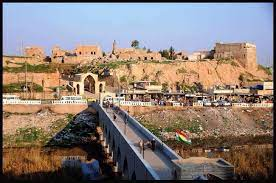

Kirkuk, a city in the heart of Kurdistan, holds a complex historical and geopolitical significance. Known for its rich cultural tapestry and diverse population, Kirkuk has been at the center of territorial disputes and demographic challenges. The city is home to Kurds, Arabs, Turkmen, and other ethnic groups, contributing to its cultural mosaic. Kirkuk has faced periods of tension and conflict, particularly regarding control and ownership. Its oil wealth has added another layer of complexity to the region's dynamics. Despite these challenges, Kirkuk remains a vibrant hub where different cultures intersect, and efforts continue to foster peaceful coexistence and stability in this historically and culturally significant part of Kurdistan.
